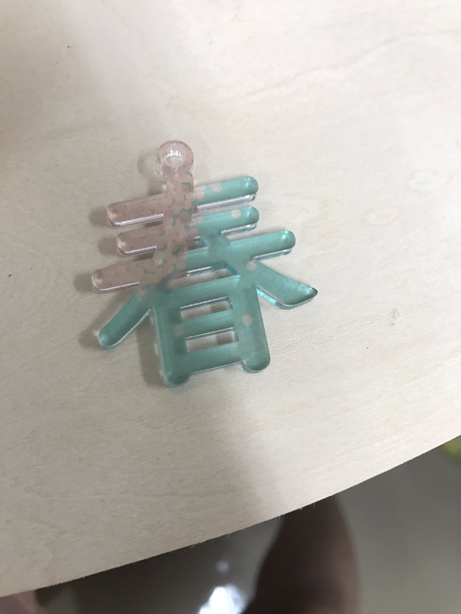

魚の漢字をイヤリングにした。 イラストレーターでデザイン。 アクリル板（押出、3mm）をレーザーカッターで出力。 UVで色付け。

たくさんの人が観に来てくれた。 自分では欧米っぽいイメージの外国人に受けやすいかな、と思いこんでいたが漢字をいっぱい使う中国、台湾の外国人にたくさん観てくれた。 予想外だったが、観てくれて嬉しかった。しかし佐野は日本語しか話せないため、あまりうまく伝わらなかった。英語を勉強しようと思った。 また、地元民が魚の話をしてくれて、コミュニケーションが取れた。スズキが取れるらしい。 三浦さんとの共同で作った。分担して作った。
 ここからダウンロードしてインストールすることもできます。
ここからダウンロードしてインストールすることもできます。